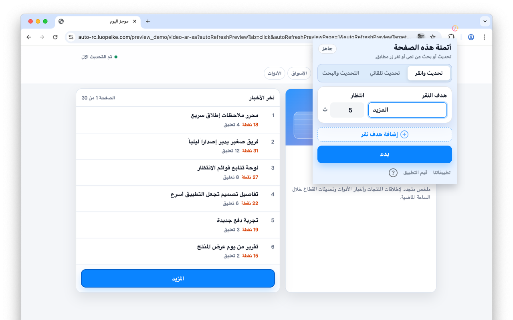

تحديث الصفحات بفواصل زمنية مخصصة
حدّد الفاصل الزمني وحافظ على تحديث الصفحات المهمة في المتصفح.
Safari على iPhone وiPad وMac · Chrome على الكمبيوتر
قم بتحديث الصفحات بفواصل زمنية، وانقر الأزرار المطابقة، وابحث عن تغييرات النص.

مفيد للتذاكر والمخزون والأسعار وحالة الطلبات ولوحات المعلومات.
حدّد الفاصل الزمني وحافظ على تحديث الصفحات المهمة في المتصفح.
ابحث عن أزرار مثل Buy أو Next أو Submit أو Reserve وانقر تلقائيًا.
مفيد للتذاكر والمخزون والطلبات والأسعار ولوحات المعلومات.
تبقى الإعدادات داخل المتصفح ولا تحتاج إلى حساب ويب.
• لا يمكن لمتصفح Chrome أو Edge على iPhone وiPad تثبيت الإضافات، تحتاج إلى استخدام Safari.
• توجد نسخة Safari من هذا الامتداد. ابحث عن "Auto Refresh & Clicker" في App Store، أو ابحث عنه هنا Auto Refresh & Clicker، وادفع 2.99 دولارًا للحصول عليه، ثم يمكنك استخدامه على أجهزة iOS وmacOS الخاصة بك.
• بسبب قيود نظام iOS، لا يمكن لإضافات Safari العمل إلا لفترة قصيرة جدًا في وضع الخلفية.
• يوصى بتشغيله في المقدمة للحصول على أفضل النتائج. يمكنك ضبط شاشة iPhone لتبقى قيد التشغيل أثناء فتح ملحق Safari، حتى يتمكن من العمل بشكل مستمر.
1. أدخل الفواصل الزمنية والكلمات الرئيسية؛
2. انقر فوق "Start" (ابدأ)؛
3. إذا كنت تريد "تحديث ونقر" بفواصل زمنية وكلمات رئيسية أخرى، فانقر فوق "Stop" (إيقاف)، ثم كرر الخطوتين 1 و 2.
1. أدخل الفواصل الزمنية؛
2. انقر فوق "Start" (ابدأ)؛
3. إذا كنت تريد "Auto Refresh" بفواصل زمنية أخرى، فانقر فوق "Stop" (إيقاف)، ثم كرر الخطوتين 1 و 2.
1. أدخل الفواصل الزمنية والكلمات الرئيسية؛
2. انقر فوق "Start" (ابدأ)؛
3. إذا كنت تريد "Refresh & Find" بفواصل زمنية وكلمات رئيسية أخرى، فانقر فوق "Stop" (إيقاف)، ثم كرر الخطوتين 1 و 2.